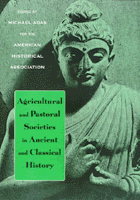

An in-depth examination of the early history of humankind
An in-depth examination of the early history of humankind


 An in-depth examination of the early history of humankind
An in-depth examination of the early history of humankind

|  |
Agricultural and Pastoral Societies in Ancient and Classical Historyedited by Michael Adaspaper EAN: 978-1-56639-832-9 (ISBN: 1-56639-832-0) |
"Viewed as a whole, this volume forms a major contribution to the current 'global discourse' in historical scholarship."
—Ancient East & West
The second volume in the American Historical Association's series introduces readers to the cross-cultural study of ancient and classical civilizations. The opening essay by Jerry Bentley surveys methodologies and critical interpretations that have been essential to the development of comparative historical analysis. These include contributions from the fields of sociology, archaeology, linguistics, anthropology, and recent investigative practices that honor previously neglected groups and validate testimony passed down through oral traditions. The first set of essays highlight predominant themes in global history by examining the ongoing interactions between ancient agrarian and nomadic societies as well as the impact of these exchanges on economic development and cross-cultural adaptation. The essays in the second section focus on regional patterns in the dissemination of ideas, institutions, and material culture.
By highlighting key historical transitions and recurring cultural patterns, this book provides an engaging introduction to the complexities of human development. Written by leading scholars in the field, the historiographic essays in Agricultural and Pastoral Societies in Ancient and Classical History offer students and teachers a comprehensive overview of the arguments, applications, and resources that inform comparative global history.
"...indispensable for the study of world history.... Each of the chapters can be a guiding light for those interested in researching and writing world history."
—Journal of World History
Introduction – Michael Adas
Part I: General Themes
1. Shapes of World History in Twentieth-Century Scholarship – Jerry H. Bentley
2. Agricultural Origins in Global Perspective – John Mears
3. Nomads and Sedentary Societies in Eurasia – Peter Golden
4. Women in Ancient Civilizations – Sarah Shaver Hughes and Brady Hughes
5. The Silk Road: Overland Trade and Cultural Interactions in Eurasia – Xinru Liu
Part II: Cross-Cultural Themes in Key Global Regions
6. The Peoples and Civilizations of the Americas Before Contact – John E. Kicza
7. Sudanic Civilization – Christopher Ehret
8. The Hellenistic Period in World History – Stanley Burstein
9. Southernization – Lynda Shaffer
10. Finding Buddhists in Global History – Jonathan S. Walters
About the Contributors
 | Michael Adas is Abraham Voorhees Professor of History at Rutgers University, New Brunswick. He is currently editor of the American Historical Association's series on Global and Comparative History and co-editor of the Cambridge University Press series on "Studies in Comparative World History." He has published numerous articles and books, including most recently (with Peter Stearns and Stuart Schwartz) World Civilization: The Global Experience (1992) and Turbulent Passage: A Global History of the Twentieth Century (1993). |
Critical Perspectives on the Past, edited by Susan Porter Benson, Stephen Brier, and Roy Rosenzweig.
Critical Perspectives on the Past, edited by Susan Porter Benson, Stephen Brier, and Roy Rosenzweig, is concerned with the traditional and nontraditional ways in which historical ideas are formed. In its attentiveness to issues of race, class, and gender and to the role of human agency in shaping events, the series is as critical of traditional historical method as content. Emphasizing that history is itself an interpretation of material events, the series demonstrates that the historian's choices of subject, narrative technique, and documentation are politically as well as intellectually constructed.
© 2015 Temple University. All Rights Reserved. This page: http://www.temple.edu/tempress/titles/886b_reg.html.